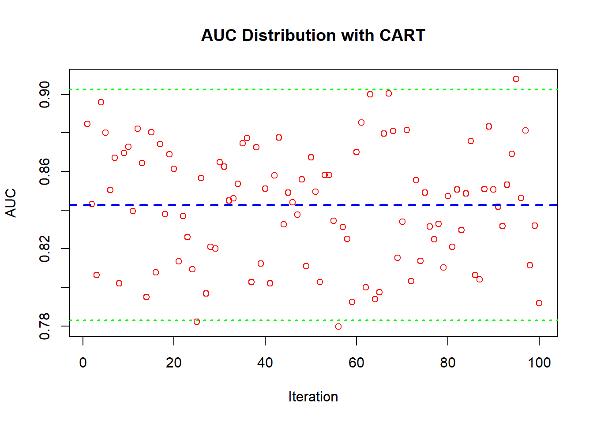

Chapter 2 Algorithms
These all will be done in classification but can easily be changed and you can look at the regressional examples
2.1 Data
suppressPackageStartupMessages(library(dplyr))
suppressPackageStartupMessages(library(ROCR))
suppressPackageStartupMessages(library(rpart))
suppressPackageStartupMessages(library(randomForest))
suppressPackageStartupMessages(library(xgboost))
suppressPackageStartupMessages(library(doParallel))
suppressPackageStartupMessages(library(gbm))
suppressPackageStartupMessages(library(ada))
suppressPackageStartupMessages(library(caret))
suppressPackageStartupMessages(library(nnet))library(dslabs)
data("mnist_27")
data <- rbind(mnist_27$train, mnist_27$test)
dataf <- as.data.frame(lapply(data, function(x) if(is.numeric(x)) scale(x) else x))
data <- dataf
data$y <- ifelse(data$y == "7", 1, 0)## Rows: 1,000
## Columns: 3
## $ y <dbl> 0, 1, 0, 0, 1, 0, 1, 1, 1, 0, 0, 1, 0, 0, 1, 0, 0, 0, 0, 0, 1, 0, …
## $ x_1 <dbl> -1.6192183, -0.2321362, -1.8274064, -0.5171458, 2.3938524, -1.5154…
## $ x_2 <dbl> -1.19265064, -2.30968844, -0.10549778, -0.74534398, 0.94485419, -0…## Rows: 1,000
## Columns: 3
## $ y <fct> 2, 7, 2, 2, 7, 2, 7, 7, 7, 2, 2, 7, 2, 2, 7, 2, 2, 2, 2, 2, 7, 2, …
## $ x_1 <dbl> -1.6192183, -0.2321362, -1.8274064, -0.5171458, 2.3938524, -1.5154…
## $ x_2 <dbl> -1.19265064, -2.30968844, -0.10549778, -0.74534398, 0.94485419, -0…2.2 Parametric
2.2.1 LM
auc_lm <- c()
n <- 100
for (i in 1:n){
idx <- unique(sample(nrow(data), size = nrow(data), replace = TRUE))
trn <- data[idx, ]
tst <- data[-idx, ]
mdl <- lm(y ~ ., data = trn)
phat <- predict(mdl, tst)
pred <- prediction(phat, tst$y)
auc_lm[i] <- performance(pred, "auc")@y.values[[1]]
}
auc <- auc_lm
# Plot AUC values, mean, and confidence intervals
plot(auc, col = "red", main = "AUC Distribution", xlab = "Iteration", ylab = "AUC")
abline(h = mean(auc), col = "blue", lwd = 2, lty = 2)
abline(h = mean(auc) - 1.96 * sd(auc), col = "green", lwd = 2, lty = 3)
abline(h = mean(auc) + 1.96 * sd(auc), col = "green", lwd = 2, lty = 3) 
2.3 Trees
2.3.1 CART
auc_cart <- c()
n <- 100
for (i in 1:n) {
idx <- unique(sample(nrow(dataf), size = nrow(dataf), replace = TRUE))
trn <- dataf[idx, ]
tst <- dataf[-idx, ]
# Fit a CART model
mdl <- rpart(y ~ ., data = trn, method = "class")
# Predict probabilities. Adjust if your 'y' variable is factor with levels other than 0 and 1
phat <- predict(mdl, tst, type = "prob")[,2]
# Calculate AUC
pred <- prediction(phat, tst$y)
auc_cart[i] <- performance(pred, "auc")@y.values[[1]]
}
auc <- auc_cart
# Plot AUC values, mean, and confidence intervals
plot(auc, col = "red", main = "AUC Distribution with CART", xlab = "Iteration", ylab = "AUC")
abline(h = mean(auc), col = "blue", lwd = 2, lty = 2)
abline(h = mean(auc) - 1.96 * sd(auc), col = "green", lwd = 2, lty = 3)
abline(h = mean(auc) + 1.96 * sd(auc), col = "green", lwd = 2, lty = 3)
2.3.2 Bagging
auc_bag <- c()
n <- 100
B <- 100
num_vars <- ncol(dataf) - 1
for (i in 1:n) {
idx <- sample(nrow(dataf), nrow(dataf), replace = TRUE)
trn <- dataf[idx, ]
tst <- dataf[-idx, ]
mdl <- randomForest(y ~ ., data = trn, ntree = B, mtry = num_vars)
phat <- predict(mdl, tst, type = "prob")[,2]
# Calculate AUC
pred <- prediction(phat, as.numeric(as.character(tst$y)))
auc_bag[i] <- performance(pred, "auc")@y.values[[1]]
}
auc <- auc_bag
# Plot AUC values, mean, and confidence intervals
plot(auc, col = "red", main = "AUC Distribution with Bagging", xlab = "Iteration", ylab = "AUC")
abline(h = mean(auc), col = "blue", lwd = 2, lty = 2)
abline(h = mean(auc) - 1.96 * sd(auc), col = "green", lwd = 2, lty = 3)
abline(h = mean(auc) + 1.96 * sd(auc), col = "green", lwd = 2, lty = 3)
2.3.3 RF
auc_rf <- c()
n <- 100
B <- 100
for (i in 1:n) {
# Ensure unique indices for training data to avoid empty test set
idx <- unique(sample(nrow(dataf), size = nrow(dataf), replace = TRUE))
trn <- dataf[idx, ]
tst <- dataf[-idx, ]
# Fit a Random Forest model
mdl <- randomForest(y ~ ., data = trn, ntree = B)
# Predict probabilities for the positive class
phat <- predict(mdl, tst, type = "prob")[,2]
# Calculate AUC
pred <- prediction(phat, as.numeric(as.character(tst$y)))
auc_rf[i] <- performance(pred, "auc")@y.values[[1]]
}
auc <- auc_rf
# Plot AUC values, mean, and confidence intervals
plot(auc, col = "red", main = "AUC Distribution with RF", xlab = "Iteration", ylab = "AUC")
abline(h = mean(auc), col = "blue", lwd = 2, lty = 2)
abline(h = mean(auc) - 1.96 * sd(auc), col = "green", lwd = 2, lty = 3)
abline(h = mean(auc) + 1.96 * sd(auc), col = "green", lwd = 2, lty = 3)
2.4 Boosting
2.4.1 Adaboost
This works now just make it like the others
We also can just take gbm and switch it to adaboost
ada_model <- ada(y ~ ., data = dataf, iter = 100, nu = 0.1, control = rpart.control(maxdepth = 3))
summary(ada_model)## Call:
## ada(y ~ ., data = dataf, iter = 100, nu = 0.1, control = rpart.control(maxdepth = 3))
##
## Loss: exponential Method: discrete Iteration: 100
##
## Training Results
##
## Accuracy: 0.855 Kappa: 0.7092.4.2 GBM boost
grid <- expand.grid(
n.trees = seq(100, 200, by = 100), # Number of trees
interaction.depth = seq(1, 2, by = 1), # Max depth of trees
shrinkage = seq(0.1, 0.2, by = 0.1) # Learning rate
)
conf_lev <- .95
num_max <- 5 # Define number around the maximum
n <- log(1-conf_lev)/log(1-num_max/nrow(grid))
ind <- sample(nrow(grid), nrow(grid)*(n/nrow(grid)), replace = FALSE)
rgrid <- grid[ind, ]n <- 10
v <- 3
results <- matrix(nrow = n, ncol = 4)
for (i in 1:n) {
# Bootstrap sampling for training and test sets
idx <- sample(nrow(data), nrow(data), replace = TRUE)
train_data <- data[idx, ]
test_data <- data[-idx, ]
auc_vg <- c()
for (j in 1:nrow(rgrid)) {
auc_v <- c()
for (k in 1:v) {
v_idx <- sample(nrow(train_data), nrow(train_data), replace = TRUE)
val_data <- train_data[-v_idx, ]
# Fit GBM model
mdl <- gbm(y ~ .,
data = train_data[v_idx, ],
distribution = "bernoulli",
n.trees = rgrid[j, "n.trees"],
interaction.depth = rgrid[j, "interaction.depth"],
shrinkage = rgrid[j, "shrinkage"],
verbose = FALSE)
# Predict on validation set and calculate AUC
p <- predict(mdl, newdata = val_data, n.trees = rgrid[j, "n.trees"], type = "response")
pred <- prediction(p, val_data$y)
auc_v[k] <- performance(pred, "auc")@y.values[[1]]
}
auc_vg[j] <- mean(auc_v)
}
# Identify the best model
best_idx <- which.max(auc_vg)
best_prm <- rgrid[best_idx, ]
# Train final model on the full training data and predict on test set
mdl_final <- gbm(y ~ .,
data = train_data,
distribution = "bernoulli",
n.trees = best_prm[1, "n.trees"],
interaction.depth = best_prm["interaction.depth"],
shrinkage = best_prm["shrinkage"],
verbose = FALSE)
p_t <- predict(mdl_final, newdata = test_data, n.trees = best_prm[1, "n.trees"], type = "response")
pred_t <- prediction(p_t, test_data$y)
auc_test <- performance(pred_t, "auc")@y.values[[1]]
results[i, 1] <- auc_test
results[i, 2] <- best_prm[1, "n.trees"]
results[i, 3] <- best_prm[1, "interaction.depth"]
results[i, 4] <- best_prm[1, "shrinkage"]
}
df_results <- as.data.frame(results)
colnames(df_results) <- c("AUC_Test", "n.trees", "interaction.depth", "shrinkage")
# Plotting
plot(df_results$AUC_Test, col = "red", main = "AUC Test Distribution", xlab = "Iteration", ylab = "AUC")
abline(h = mean(df_results$AUC_Test), col = "blue", lwd = 2, lty = 2)
abline(h = mean(df_results$AUC_Test) - 1.96 * sd(df_results$AUC_Test), col = "green", lwd = 2, lty = 3)
abline(h = mean(df_results$AUC_Test) + 1.96 * sd(df_results$AUC_Test), col = "green", lwd = 2, lty = 3)
2.4.3 XGBoost
grid <- expand.grid(
eta = seq(0.1, 0.2, by = 0.05),
max_depth = seq(1, 2, by = 1),
min_child_weight = seq(1, 1, by = 0),
subsample = seq(1, 1, by = 0),
colsample_bytree = seq(1, 1, by = 0),
lambda = seq(0, 1, by = 1),
alpha = seq(0, 1, by = 1),
gamma = seq(0, 1, by = 1),
nrounds = seq(100, 200, by = 100)
)
conf_lev <- .95
num_max <- 5 # Define number around the maximum
n <- log(1-conf_lev)/log(1-num_max/nrow(grid))
ind <- sample(nrow(grid), nrow(grid)*(n/nrow(grid)), replace = FALSE)
rgrid <- grid[ind, ]nc <- 1 #detectCores - 1
n <- 10
v <- 5
# Adjust the matrix size according to the number of hyperparameters + 1 for AUC
results <- matrix(nrow = n, ncol = length(rgrid[1,]) + 1)
for (i in 1:n) {
idx <- sample(nrow(xs), size = nrow(xs), replace = TRUE)
dx <- xs[idx, ]
dy <- y[idx]
tx <- xs[-idx, ]
ty <- y[-idx]
auc_vg <- c()
for (j in 1:nrow(rgrid)) {
auc_v <- c()
for (k in 1:v) {
v_idx <- sample(nrow(dx), nrow(dx), replace = TRUE)
vx <- dx[v_idx, ]
vy <- dy[v_idx]
val_x <- dx[-v_idx, ]
val_y <- dy[-v_idx]
prm <- list(
booster = "gbtree",
objective = "binary:logistic",
max_depth = rgrid[j, "max_depth"],
eta = rgrid[j, "eta"],
subsample = rgrid[j, "subsample"],
colsample_bytree = rgrid[j, "colsample_bytree"],
gamma = rgrid[j, "gamma"],
min_child_weight = rgrid[j, "min_child_weight"],
alpha = rgrid[j, "alpha"],
lambda = rgrid[j, "lambda"],
nthread = nc
)
dm_train <- xgb.DMatrix(data = vx, label = vy)
mdl <- xgb.train(params = prm, data = dm_train, nrounds = rgrid[j, "nrounds"], verbose = FALSE)
p <- predict(mdl, xgb.DMatrix(data = val_x))
pred <- prediction(p, val_y)
auc_v <- c(auc_v, performance(pred, "auc")@y.values[[1]])
}
auc_vg <- c(auc_vg, mean(auc_v))
}
best_idx <- which.max(auc_vg)
best_prm <- rgrid[best_idx, ]
best_prm_list <- as.list(best_prm[-which(names(best_prm) == "nrounds")])
best_prm_list$booster <- "gbtree"
best_prm_list$objective <- "binary:logistic"
best_prm_list$nthread <- nc
dm_final <- xgb.DMatrix(data = dx, label = dy)
dt_final <- xgb.DMatrix(data = tx, label = ty)
mdl_final <- xgb.train(params = best_prm_list,
data = dm_final,
nrounds = best_prm[ ,"nrounds"],
verbose = FALSE)
p_t <- predict(mdl_final, dt_final)
pred_t <- prediction(p_t, ty)
auc_test <- performance(pred_t, "auc")@y.values[[1]]
# Store AUC and hyperparameters in the results matrix
results[i, 1] <- auc_test
results[i, 2:ncol(results)] <- as.numeric(best_prm)
}
# Convert results to a dataframe for easy handling
df_results <- as.data.frame(results)
colnames(df_results) <- c("AUC_Test", names(rgrid[1,]))
# Example of plotting, adjust as necessary
plot(df_results$AUC_Test, col = "red", main = "AUC Test Distribution", xlab = "Iteration", ylab = "AUC")
abline(h = mean(df_results$AUC_Test), col = "blue", lwd = 2, lty = 2)
abline(h = mean(df_results$AUC_Test) - 1.96 * sd(df_results$AUC_Test), col = "green", lwd = 2, lty = 3)
abline(h = mean(df_results$AUC_Test) + 1.96 * sd(df_results$AUC_Test), col = "green", lwd = 2, lty = 3)
2.5 Other Non-parametric
2.5.1 KNN
tauc <- c()
tuned_k <- c()
for (t in 1:25) {
ind <- sample(nrow(data), nrow(data)*0.8)
mdata <- data[ind, ]
test <- data[-ind, ]
mauc <- c()
for(i in 1:length(k)) {
auc <- c()
for(j in 1:2) {
ind2 <- sample(nrow(mdata), nrow(mdata), replace = TRUE)
train <- mdata[ind2, ]
val <- mdata[-ind2, ]
model <- knn3(y ~ ., data = train, k = k[i])
phat <- predict(model, val, type = "prob")[,2]
pred_rocr <- prediction(phat, val$y)
auc_ROCR <- performance(pred_rocr, "auc")
auc[j] <- auc_ROCR@y.values[[1]]
}
mauc[i] <- mean(auc)
}
tuned_k <- k[which.max(mauc)]
model <- knn3(y ~ ., data = mdata, k = tuned_k)
phat <- predict(model, test, type = "prob")[,2]
pred_rocr <- prediction(phat, test$y)
auc_ROCR <- performance(pred_rocr, "auc")
tauc[t] <- auc_ROCR@y.values[[1]]
}
auc <- tauc
# Plot AUC values, mean, and confidence intervals
plot(auc, col = "red", main = "AUC Distribution with KNN3", xlab = "Iteration", ylab = "AUC")
abline(h = mean(auc), col = "blue", lwd = 2, lty = 2)
abline(h = mean(auc) - 1.96 * sd(auc), col = "green", lwd = 2, lty = 3)
abline(h = mean(auc) + 1.96 * sd(auc), col = "green", lwd = 2, lty = 3)2.5.2 Nueralnet
size <- c(seq(2, 3, 1))
decay <- c(seq(0.01, 0.25, 0.05))
maxit <- c(seq(100, 900, 400))
grid <- expand.grid(size, decay, maxit)
conf_lev <- .95
num_max <- 5 # Define number around the maximum
n <- log(1-conf_lev)/log(1-num_max/nrow(grid))
ind <- sample(nrow(grid), nrow(grid)*(n/nrow(grid)), replace = FALSE)
rgrid <- grid[ind, ]n <- 100
v <- 5
# store out best values via validation scores
opt <- matrix(0, nrow = n, ncol = 5)
colnames(opt) <- c("size", "decay", "maxit", "AUC_val", "AUC_TEST")
for (j in 1:n){
# put aside data for final test. creat md and test
ind <- unique(sample(nrow(data), nrow(data), replace = TRUE))
md <- data[ind, ]
test <- data[-ind, ]
auc_runs <- c()
for (i in 1:nrow(rgrid)){
#cat("loops: ", j, i, "\r")
auc_tuning <- c()
for (p in 1:v){
# bootstrap from md to make a train and val set
idx <- unique(sample(nrow(md), nrow(md), replace = TRUE))
train <- md[idx,]
val <- md[-idx, ]
# model on the train data
model <- nnet(y ~ .,
data = train,
trace = FALSE,
act.fct = "logistic",
size = rgrid[i, 1],
decay = rgrid[i, 2],
maxit = rgrid[i, 3]
)
# predict on the val data
phat <- predict(model, val)
# find the auc
pred_rocr <- prediction(phat, val$y)
auc_ROCR <- performance(pred_rocr, measure = "auc")
auc_tuning[p] <- auc_ROCR@y.values[[1]]
}
auc_runs[i] <- mean(auc_tuning) #take the mean of v runs for that one specific hyper parameter
}
# index the best hyper parameters
BI <- which.max(auc_runs)
best_AUC <- auc_runs[BI]
best_params <- rgrid[BI, ]
# store the best hyper parames based on the mean aucs
opt[j, 1] <- best_params[1, 1]
opt[j, 2] <- best_params[1, 2]
opt[j, 3] <- best_params[1, 3]
opt[j, 4] <- best_AUC
# model with the md data
model <- nnet(y ~ .,
data = md,
trace = FALSE,
act.fct = "logistic",
size = opt[j, 1],
decay = opt[j, 2],
maxit = opt[j, 3]
)
# predict the set aside test set
phat_t <- predict(model, test)
# get the test auc
pred_rocr <- prediction(phat_t, test$y)
auc_ROCR <- performance(pred_rocr, measure = "auc")
auc_test <- auc_ROCR@y.values[[1]]
# store the test auc
opt[j, 5] <- auc_test
}
auc <- opt[,5]
# Plot AUC values, mean, and confidence intervals
plot(auc, col = "red", main = "AUC Distribution with nnet", xlab = "Iteration", ylab = "AUC")
abline(h = mean(auc), col = "blue", lwd = 2, lty = 2)
abline(h = mean(auc) - 1.96 * sd(auc), col = "green", lwd = 2, lty = 3)
abline(h = mean(auc) + 1.96 * sd(auc), col = "green", lwd = 2, lty = 3)